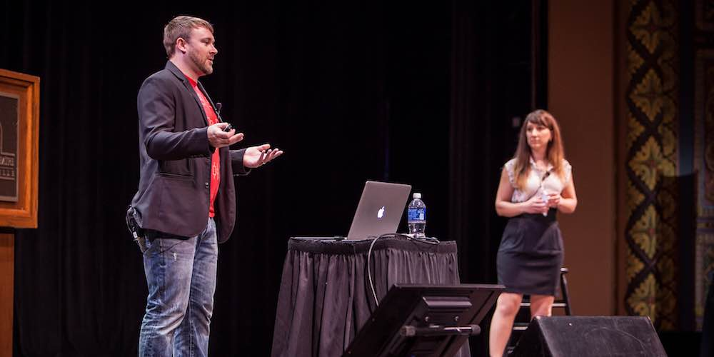
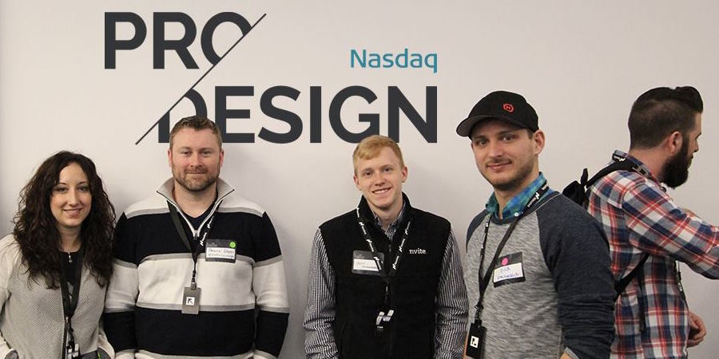
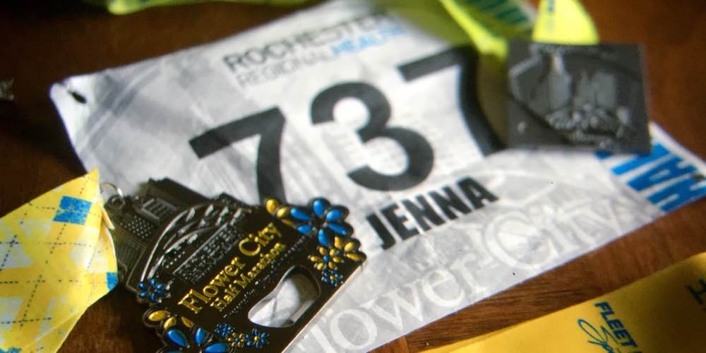
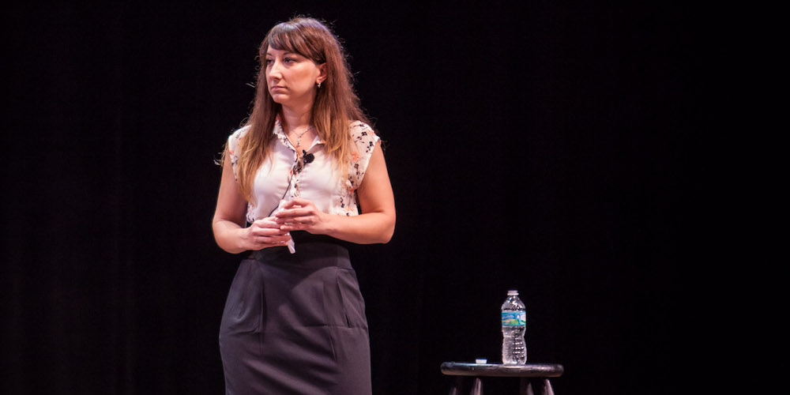
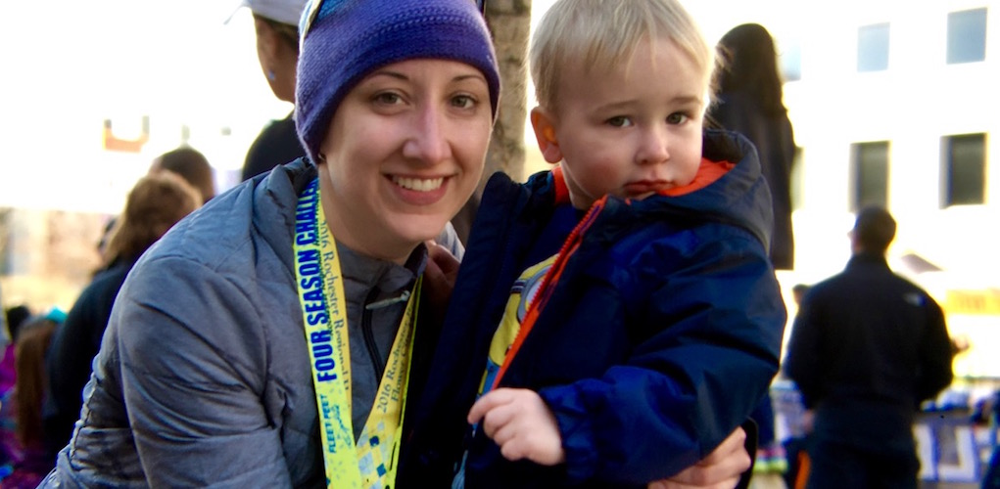

User Experience + Product Designer
Using my experience in graphic design & illustration, I help create attractive, enjoyable interfaces for all types of people.





Experience
Great user experiences are important, and I'm passionate about creating them for all devices. When I'm not working through interaction design challenges, you can find me training for another marathon, networking at design events, or spending time with my amazing family.
User Experience Designer
March 2007 — Present
Hanerino is the husband-and-wife design studio of Patrick Haney & Jenna Marino.
-
Featured in an issue of .NET Magazine for writing an article on multi-device design.
-
Speaker at several conferences on the topic of cohesive UX design across multiple platforms and devices.
-
Worked directly with several clients on interactive projects, including the LinkedIn Engineering team, the City of Boston, and the New England Wild Flower Society.
Creative Director
April 2013 — May 2016
Univision Communications Inc. (UCI) is the leading media company serving Hispanic America.
-
Led the effort during a year-long overhaul of the CMS and visual design of Univision.com to develop a responsive experience focusing on mobile, as Univision's audience is 80% mobile users.
-
Redesigned the product suite for videos on Univision (Uvideos) for platforms including Samsung, Xbox & Smartglass, second screen for mobile and tablet as well as video.
-
Continually worked towards a consistent design experience across all the applications in the Univision portfolio, including Uforia, Uvideos, Deportes, Noticias & Univision
Principle User Experience Designer
September 2009 — March 2012
Blockbuster Digital is a leading global provider of movie and game rentals and is synonymous with family entertainment.
-
Created a consistent, harmonious experience over a suite of products, from mobile, tablet, website, to Consumer Experience (TV Set Top) devices.
-
Part of a small remote design team that designed architecture, user flows, wireframes and visual designs for the Blockbuster application on the Motorola Droid X, the Samsung TV, HTC HD2, & iPhone.
-
Worked closely with the development teams on design production, as well as the business team and partners on marketing.
Designer & Art Director
September 2008 — September 2009
Hunt & Gather is a full-service interactive agency that creates strategic, creative, and effective communications that evoke authentic engagements between your brand and its audience.
-
Created visual experiences from start to finish in a small collaborative design team working on site architecture, framework, interfaces & design.
-
Designed and illustrated iPhone conceptual marketing for a company creating their own communication applications and proprietary code.
-
Worked on branding and print design projects as well as marketing site designs, including Esquire's SOHO House website.
Senior Interactive Art Director
December 2007 — September 2008
Valassis is a leader in intelligent media delivery, providing over 58,000 clients with innovative media solutions to influence consumers wherever they plan, shop, buy and share.
-
Sole designer and team manager responsible for launching the popular Valassis product RedPlum.com.
-
Changed the focus of the brand from a generic coupon website to a community-focused, information based destination for busy,family-oriented women.
-
Integral in the marketing, external desktop and mobile applications created to reach a broader audience.
Senior Designer
July 2005 — December 2007
AOL is a global media and technology company, representing the best of all worlds: premium content and innovative technology.
-
Manage the team and projects within the AIM Product Design Group.
-
Worked on the redesign of the people portal of AIM.com, utilizing new technologies and trends in social networks to connect people within AIM and its various web properties.
-
Designer on the award-winning Ficlets project and worked closely with the front-end developer on production.
Volunteer
Being a part of the community is very important to me, and I try to give back to that community whenever I can, whether it's design-related or not.
Family Waiting Room Assistant
April 2016 — Present
The new Golisano Children's Hospital helps families feel at home and enable doctors and nurses to work more efficiently.
-
Volunteering time to spend time with siblings and family of patients at the hospital.
-
Providing support, education and entertainment for young children in the Family Waiting Room.
Director of Web & Social Media
March 2013 — August 2014
The Boston chapter of AIGA is the 6th largest in the nation and is moving into its 31st year as a chapter.
-
Board member of the Boston chapter of AIGA.
-
Assisting with the chapter web presence and organization of numerous design-related events.
-
Provided support with the chapter social media accounts and member communications.